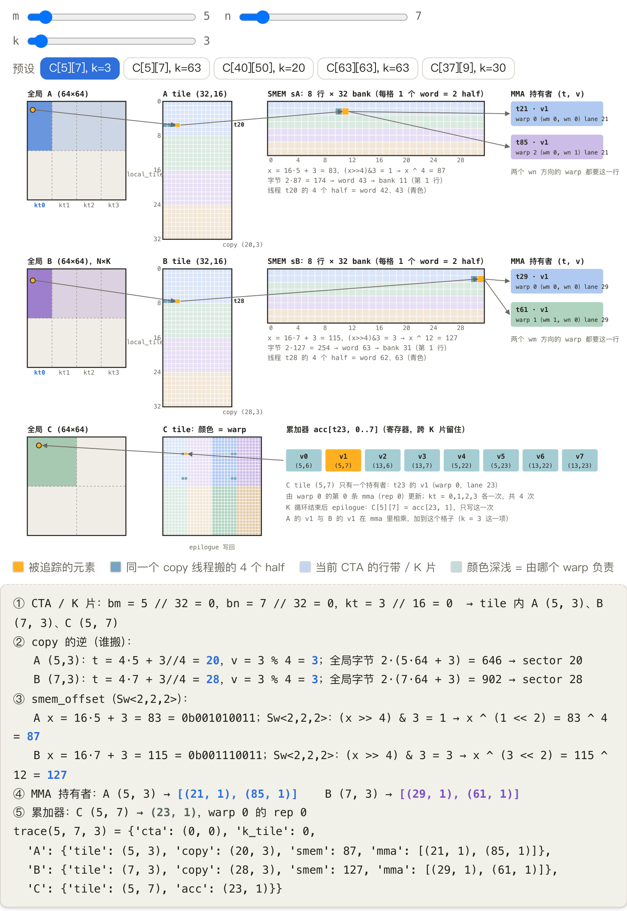
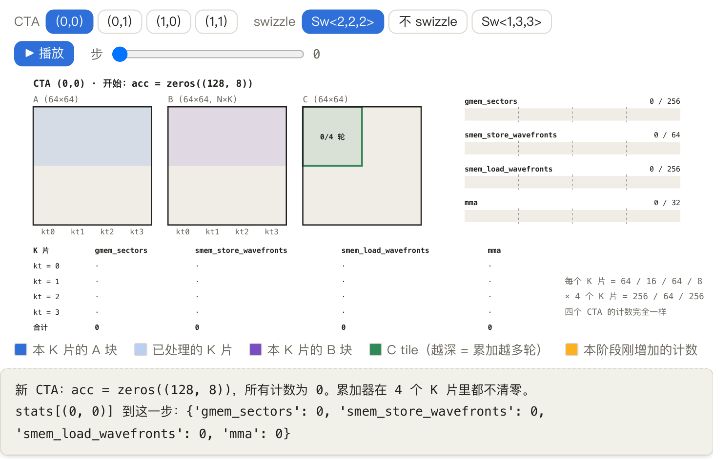
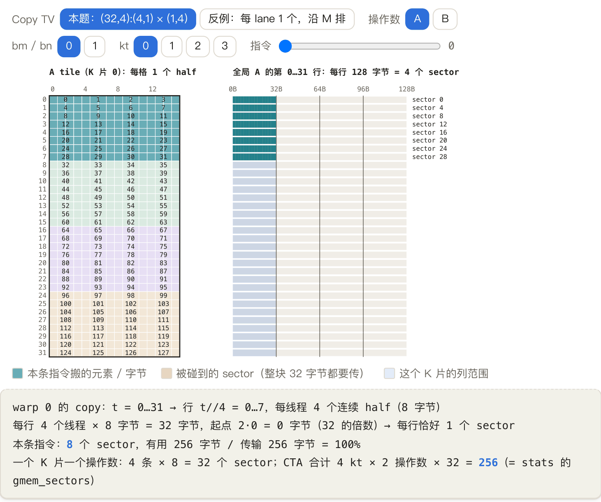
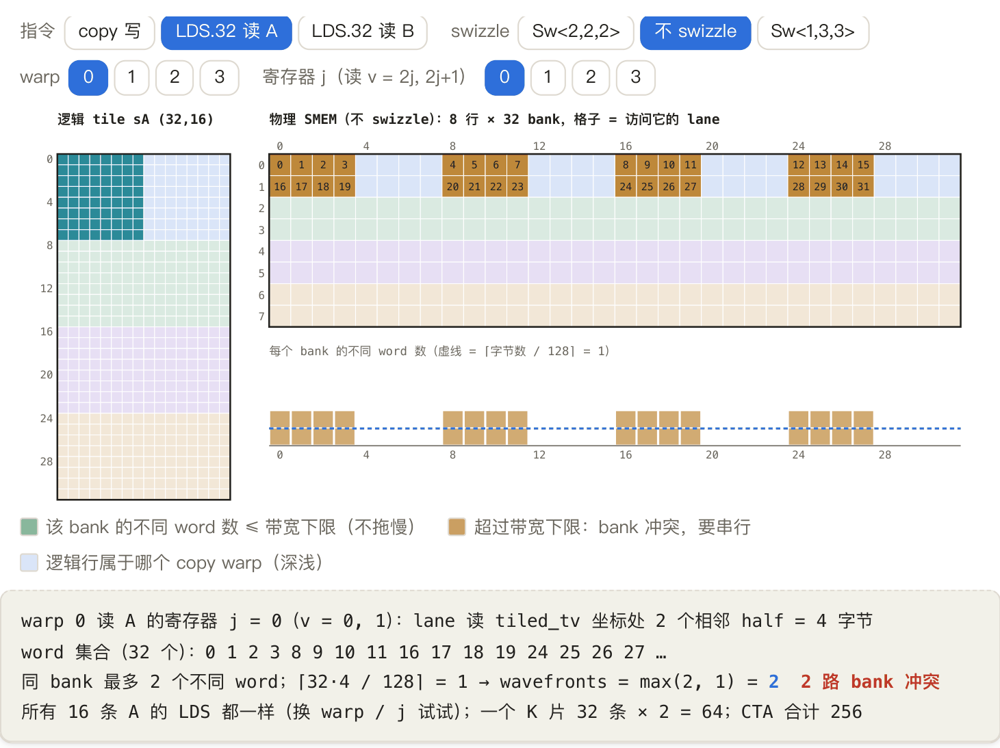
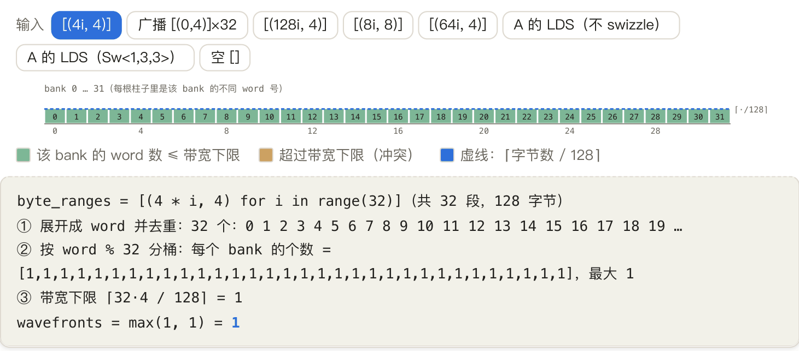
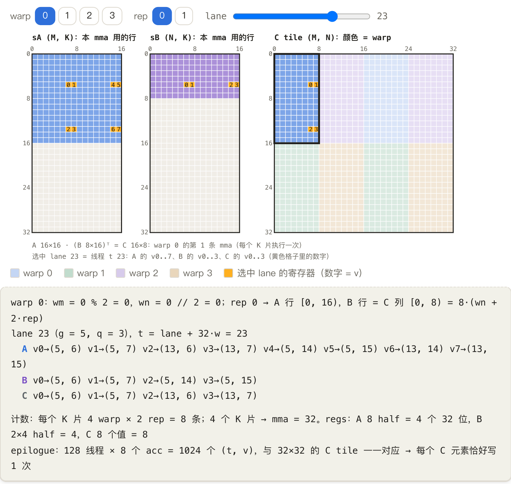

A5 · 把五个映射拼成完整的 Tiled GEMM：模拟、统计、追踪 C[5][7]
把 A1–A4 的五个映射首尾相连，写出一个只靠索引映射算出来的 64×64 Tiled GEMM：逐 CTA、逐 K 片地把数据从全局内存搬进 swizzle 过的 SMEM，再按 MMA 的 TV 布局读进寄存器、在累加器里累加、最后写回一次。顺便统计访存 sector、SMEM wavefront 和 mma 条数，并把 C[5][7] 经过的每一层都追踪出来，和真实 CuTe 的 partition 结果对拍。
文件: mine/a5_assemble_gemm.py 你的代码 · tests/test_a5_assemble_gemm.py 测试 · solutions/a5_assemble_gemm.py 参考解
题面速览
- 背景知识：从零设计 的“五个空间映射”和 真实代码导读。
- 在体系里的位置：这就是 sgemm_sm80.cu 的主循环 去掉流水线之后的样子：
local_tile→copy(copy_a, tAgA, tAsA)→copy(s2r_atom_a, ...)→gemm(mma, tCrA, tCrB, tCrC)。 - 你要实现：
wavefronts、simulate_gemm、trace。A1–A4 的结果（local_tile_coords、copy_coords、smem_offset、ptx_a/b/c、tiled_tv）已经给出。 - 关键规则：
- 每个 CTA 一个 (128, 8) 的累加器数组，K 循环 4 次都不清零、不写回；K 全部完成后按 C 的 TV 写回一次。
- 每个 K 片先把 A、B 的 (32,16) tile 写进 SMEM（偏移 =
smem_offset(r, c, swizzle)），再只从 SMEM 读进寄存器。 - gmem sector = 32 字节；全局字节地址
2·(行·64 + 列)。SMEM wavefront = max(同一 bank 不同 word 的最大个数, ⌈字节数 / 128⌉)，同一 word 广播免费。 - smem → 寄存器用“32 位 LDS”模型：每个 warp 每个 K 片，A 的 4 个寄存器、B 的 4 个寄存器各一条指令。
验收要点：给出的 copy / MMA / swizzle 与真实 CuTe 的 partition_S、partition_A/B/C、composition(Swizzle) 一致 · wavefront 模型的边界例子 · 三种 swizzle 下结果都等于 A @ B.T · C 的每个元素恰好写一次 · 每个 CTA 的计数 256 / 64 / 32 · Swizzle<2,2,2> 和不 swizzle 一样是 256 个 load wavefront，Swizzle<1,3,3> 降到 128 · trace(5, 7, 3) 和 trace(5, 7, 50) 的完整结果 · trace 与真实 partition 一致 · 越界与形状错误报错。
- sector：全局内存访问的最小粒度，32 字节。一条 warp 指令触及的 sector 越少越好。
- bank / wavefront：SMEM 有 32 个 bank，每个 bank 每周期服务一个 4 字节 word。一条指令里同一 bank 的不同 word 要分多个 wavefront 串行完成，这就是 bank conflict。
- LDS（Load from Shared）：SMEM → 寄存器的普通 load；
LDS.32每 lane 读 4 字节。 - epilogue：主循环结束后把累加器写回全局 C 的阶段。
直觉与类比
全局内存是冷库，SMEM 是备菜台，寄存器是每个厨师手边的砧板，累加器是锅。每一轮（K 片）：搬运工（copy 线程）按清单（Copy TV）从冷库把 32×16 的一箱菜搬上备菜台，按台面编号（swizzle）摆好；厨师按菜谱（MMA TV）从台面取到砧板，下锅（mma.sync）。锅一直在火上，四轮之后才出锅装盘（epilogue）。搬运工一次搬多少、台面怎么摆，决定了冷库门口排不排队（sector）、备菜台前挤不挤（wavefront）。
图解：一个 K 片里数据走过的五层
simulate_gemm 里不允许出现 A[32*bm:..., ...] 这样的切片直接参与计算，否则就不是在检验映射了。从小例子开始：先在草稿纸上手算
这道题的尺寸是固定的（64×64×64，tile 32×32×16，128 线程），没法像 A1 那样“换个更小的矩阵”。这里的“小例子”是一个元素：只追 C[5][7] 和它在 k = 3 用到的 A[5][3]、B[7][3]，把五个映射一层层手算出来；然后换同一个 C[5][7] 的另一个 k、换别的 CTA；最后把“一个元素”放大到“一条指令”和“一个 CTA”的计数。把每一层的数都写出来之后，simulate_gemm 只是把同样的算式套进循环。
① 一个元素、一个 k：trace(5, 7, 3) 五层映射各算一次，全是整除、取模和一次异或。
CTA (0,0)，k_tile 0
A：copy (20,3) → smem 87 → mma (21,1),
(85,1)
B：copy (28,3) → smem 127 → mma (29,1),
(61,1)
C：acc (23,1)
② 同一个 C[5][7]，换 k
C 的持有者不随 k 变，A、B 的输入每个 k 都换一个。
k = 63：k_tile 3，tile 列 15
A：copy (23,3) → smem 91 → mma (23,5),
(87,5)
B：copy (31,3) → smem 115 → mma (31,3),
(63,3)
C：acc 仍是 (23,1)
③ 别的 CTA：trace(40, 50, 20)
先减掉 CTA 起点，后面的算式和 ① 完全一样。
CTA (1,1)，k_tile 1，A tile (8,4)，B tile
(18,4)
A：copy (33,0) → smem 132 → mma (2,2),
(66,2)
B：copy (73,0) → smem 300 → mma (10,4),
(42,4)
C：tile (8,18)，acc (1,6)
④ 一般：一个元素 → 一条指令 → 一个 CTA
每层的公式，以及每个 CTA 的四个计数。
CTA = (m//32, n//32)，kt = k//16
copy 线程 t = 4·row + col//4，v = col%4
smem = Sw<2,2,2>(16·row + col)
每 CTA：sector 256 · 写 64 · 读 256 · mma
32
✎ 草稿纸：trace(5, 7, 3)，从全局坐标一路追到累加器
0) 记号 A 是 M×K、B 是 N×K（都按 K 连续存），C[m][n] = Σ_k A[m][k]·B[n][k]
C[5][7] 在 k = 3 这一项要用 A[5][3] 和 B[7][3]
1) 哪个 CTA、哪个 K 片（local_tile 的逆）
bm = 5 // 32 = 0 bn = 7 // 32 = 0 kt = 3 // 16 = 0
tile 内坐标：A (5 − 32·0, 3 − 16·0) = (5, 3) B (7 − 0, 3 − 0) = (7, 3) C (5, 7)
C[5][7] 一共要 64 个 k：kt = 0,1,2,3 四个 K 片，每片 16 个，都在同一个 CTA
(0,0) 里累加
2) 谁把它从全局搬进 SMEM（Copy TV 的逆）
copy_coords(t) = [(t//4, 4·(t%4) + v) for v in 0..3]：线程 t 搬第 t//4 行的 4 个连续 K
A (5,3)：t = 4·5 + 3//4 = 20，v = 3 % 4 = 3 验算 copy_coords(20) = [(5,0),(5,1),(5,2),(5,3)] ✓
B (7,3)：t = 4·7 + 3//4 = 28，v = 3
全局字节：A[5][3] → 2·(5·64 + 3) = 646 → sector 646 // 32 = 20
B[7][3] → 2·(7·64 + 3) = 902 → sector 902 // 32 = 28
3) 放在 SMEM 的哪个位置（Swizzle<2,2,2> ∘ (32,16):(16,1)）
A：x = 16·5 + 3 = 83 = 0b01_01_0011 bits[4,6) = (83 >> 4) & 3 = 1
异或到 bits[2,4)：83 ^ (1 << 2) = 83 ^ 4 = 87 → smem 87
B：x = 16·7 + 3 = 115 = 0b01_11_0011 (115 >> 4) & 3 = 3 → 115 ^ 12 = 127
A 的 87 号 half 在字节 174、word 43、bank 43 % 32 = 11
4) 谁把它从 SMEM 读进寄存器（MMA TV 的逆，有两个持有者）
t = lane + 32·wm + 64·wn，lane = 4g + q
A (5,3)：行 5 < 16 → wm = 0，g = 5；列 3 = 2q + (i&1) + 8·(i>>2) → q = 1, i = 1
lane = 4·5 + 1 = 21；wn 取 0 或 1 都要这一行 → t = 21, 85，v = 1
B (7,3)：行 7 = g + 8·(wn + 2·(v//4)) → g = 7, wn = 0, v//4 = 0；列 3 → q = 1, i = 1
lane = 4·7 + 1 = 29；wm 取 0 或 1 → t = 29, 61，v = 1
5) 在哪个累加器里加起来
C (5,7)：行 5 → wm = 0, g = 5, i>>1 = 0；列 7 = 8·(wn + 2·(v//4)) + 2q + (i&1) → wn = 0, q = 3, i = 1
lane = 4·5 + 3 = 23，t = 23，v = 1 → acc[23, 1]
它属于 warp 0 的第 v//4 = 0 条 mma（rep 0）；4 个 K 片各执行一次，K 循环结束后才写回 C[5][7]
6) 放大到一个 CTA 的计数（CTA (0,0)，四个 CTA 都一样）
一个 K 片：copy 指令 = 4 warp × 2（A、B）= 8 条，每条 32 lane × 8 字节 = 256字节 = 8 行 × 32 字节
→ gmem sector 8 × 8 = 64，SMEM 写 8 × ⌈256/128⌉ = 16 个
wavefront
LDS.32 = 4 warp × (4 + 4) = 32 条，每条 2 个 wavefront（2 路冲突）→ 64
mma = 4 warp × 2 = 8
4 个 K 片：gmem_sectors 256 · smem_store_wavefronts 64 ·
smem_load_wavefronts 256 · mma 32
下面这张图就是上面这张草稿纸。三个滑块选 (m, n, k)，四列依次是 全局 → CTA tile 与 copy 线程 → SMEM（8 行 × 32 bank）→ MMA 寄存器持有者，最后一行是 C 的累加器和写回。箭头连起来的就是 trace(m, n, k) 的每一层；下方面板逐步代入公式，最后一行打印 trace 应该返回的 dict。

图解详解：五个映射怎样拼成一个 GEMM
这些图是交互版讲解页的静态快照，显示的是默认参数下的状态。文中提到的按钮、滑块和悬停提示在这里不能操作；图上的数字和下方的文字、表格、黑底面板说的是同一组值，可以直接对照你的函数输出。
上一节只追了一个元素。这一节把每一层放大到“一条指令”和“一个 K 片”：先看整个 CTA 的 K 循环和四个计数器怎么涨，然后依次看 copy 怎样碰全局内存的 sector、SMEM 写读怎样撞 bank、wavefronts 怎样算、mma 怎样把寄存器拼成矩阵并在累加器里累加。整道题的骨架就是下面这段伪代码，每一行旁边标了对应的图：
for bm in range(2):
for bn in range(2): # 4 个 CTA，计数各自独立（图 1）
acc = zeros((128, 8)) # 累加器：128 线程 × 8 个值，整个 K
for kt in range(4): # K 循环（图 1）
for X in (A, B): # gmem → smem：每个 warp 1 条 cop
for w in range(4):
t in warp w: copy_coords(t) → 全局 (row0 + r, 16·kt + c) → sX[smem_off
stats: + 不同 sector 数，+ wavefronts(写的字节区间)
for w in range(4): # smem → 寄存器：每 warp A 4 条 +
for j in range(4): rX[t, 2j], rX[t, 2j+1] = sX[smem_offset(tiled_tv 坐标)]
stats: + wavefronts(32 个 lane 各 4 字节)
for w in range(4): # 每 warp 2 条 mma.sync（图 5）
for rep in (0, 1): 用 ptx_a/b/c 拼成 16×16 · (8×16)ᵀ，加回 acc[t, i + 4·rep]
按 tiled_tv("C") 把 acc 写回 C，c_writes += 1 # epilogue（图 5）
图 1 · 一个 CTA 的 K 循环：四个阶段与四个计数器
一个 K 片分四个阶段：①copy A ②copy B（gmem → smem）③LDS.32（smem → 寄存器）④mma.sync。点“▶ 播放”或拖动步数，左边是三块全局矩阵上当前 K 片的位置，右边是 stats[(bm, bn)] 的四个计数器，下面的表按 K 片记账。值得注意的三点：
- 每个 K 片的增量完全一样（64 / 16 / 64 / 8），所以总数就是 4 倍。四个 CTA 也完全一样。
- C tile 在 K 循环里一直不动，只是颜色越来越深；直到最后的 epilogue 才写回一次。
- 把 swizzle 换成
Sw<1,3,3>，只有 LDS 那一列从 64 变成 32；换成“不 swizzle”和Sw<2,2,2>完全一样。

源码对照：真实 kernel 的 K 循环在 sgemm_sm80.cu L262-L299 （外层 while 是 K 片，内层 k_block 是一个 K 片里的 MMA_K 步），累加器在 L170 清零一次，epilogue 是 L309 的 axpby 。
图 2 · gmem → smem 的 copy：一条指令碰几个 sector
左边是一个 K 片的 A（或 B）tile，32 行 × 16 个 K，每 4 个格子是一个线程（标着 t），颜色是 warp。右边每一行是对应的那一整行全局内存：64 个 half = 128 字节，竖线把它分成 4 个 32 字节 sector。选一个 warp，看它的一条 copy 指令在右边点亮了哪些字节、碰了哪些 sector。
- 本题的 Copy TV：一个 warp = 8 行，每行 4 个线程 × 4 个 half = 32 字节，起点
2·16·kt = 32·kt字节正好对齐 sector。8 行 → 8 个 sector，256 字节全有用。 - 切到“反例”：每个 lane 只搬 1 个 half，32 个 lane 沿 M 排成一列。一条指令碰 32 行 → 32 个 sector，每个只用 2 字节；一个 K 片要 16 条这样的指令（这正是提示 3 第 1 题的答案）。

源码对照：Copy TV 由 make_tiled_copy(atom, ThrLayout, ValLayout) 给出，真实 kernel 用的是 16×8 线程、每线程 8 个 half（sgemm_sm80.cu L368-L373 ），本题缩成 32×4 线程、每线程 4 个 half；每个线程的那一份由
ThrCopy::partition_S / partition_D 切出来，在 kernel 里对应 L119-L124 。
图 3 · SMEM 的 bank 视图：swizzle 之后写在哪、读的时候撞不撞
SMEM 是 32 个 bank × 4 字节。一个 (32,16) 的 half tile 是 1024 字节 = 256 个 word = 8 行 × 32 bank（右图），每个 bank 行装 4 个逻辑行（每行 16 个 half = 8 个 word）。左图是逻辑 tile，选中的指令碰到的格子会亮起来；右图每个格子里写的是访问这个 word 的 lane。底下的柱子是每个 bank 里不同 word的个数，wavefront 数 = max(最高的柱子, ⌈字节数 / 128⌉)。
- copy 写：每个 lane 写 8 字节 = 2 个 word，32 lane 正好铺满 2 个 bank 行。每个 bank 2 个 word，但字节下限
⌈256/128⌉也是 2：这是满带宽，不算冲突。 - LDS.32 读 A：lane (g, q) 读第 g 行第 2q、2q+1 个 half，即 word
8g + q（不 swizzle 时）。g 和 g+4 相差 32 个 word，落在同一个 bank：2 路冲突，128 字节却要 2 个 wavefront。 - Sw<2,2,2> 用行号的低 2 位去改 word 的第 [1,3) 位：g 和 g+4 的低 2 位相同，被挪到同一个地方，冲突还在。Sw<1,3,3> 用行号的第 2 位改 word 的第 2 位：g+4 正好被挪开 4 个 bank，冲突消失。

源码对照：Swizzle<B,M,S> 的定义（x ^ ((x & yyy_msk) >> S) ）在 swizzle.hpp 的 Swizzle ；真实 kernel 用 Swizzle<3,3,3> 配 8×64 的原子（sgemm_sm80.cu L357-L362 ），因为它用 ldmatrix / 128 位访问，读法不同，需要的 swizzle 也不同。bank 的硬件规则见 CUDA C++ Programming Guide 的 Shared Memory 一节。
图 4 · wavefronts(byte_ranges) ：两个下限取大
wavefronts 是你要实现的第一个函数。它只做三件事：① 把每个 (start, nbytes) 展开成 4 字节 word 的集合（重复的 word 只算一次 = 广播）；② 按 word % 32 分桶，最高的桶就是“同一 bank 必须串行”的下限；③ 一个 wavefront 最多 128 字节，⌈4·|words| / 128⌉ 是带宽下限。两者取大。下面的图把每个 bank 画成一根柱子，柱子里每一格是一个不同的 word（格子里写 word 号），虚线是带宽下限。

图 5 · mma.sync 与累加器：寄存器怎样拼回矩阵，C 怎样只写一次
2×2 个 warp 铺满 32×32 的 C tile：warp w 的 wm = w % 2 决定 M 方向的 16 行，wn = w // 2 决定 N 方向的 8 列起点，每个 warp 再沿 N 重复一次（rep 0 / rep 1，相隔 16 列）。所以一个 warp 每个 K 片执行 2 条 m16n8k16 ：A 的 16 行 × 16 个 K，乘 B 的 8 行 × 16 个 K 的转置，得到 C 的 16×8。选 warp、rep 和 lane，看这个 lane 的 A、B、C 寄存器落在哪些格子（格子里写的是寄存器号 v）。悬停 C 的格子，看它由哪个 (t, v) 累加、由哪条 mma 产生。

源码对照：TiledMMA 的定义（SM80_16x8x16_F16F16F16F16_TN ，2×2 个 atom，Tile<_32,_32,_16> ）在
sgemm_sm80.cu L375-L377 ；每个线程的 A、B、C 分区由 ThrMMA::partition_A / B / C 给出，kernel 里对应 L157- L161 。m16n8k16 的寄存器排布（本题的 ptx_a / ptx_b / ptx_c ）见 PTX ISA 的 Matrix Fragments for
mma.m16n8k16。整体结构的讲解见 CuTe 文档 0x_gemm_tutorial.md。
速查：每一层的公式和计数
| 层 | 正向（simulate_gemm 用） | 逆向（trace 用） | 每 CTA 计数 |
|---|---|---|---|
| CTA / K 片 | A 全局 (32·bm + r, 16·kt + c)，B (32·bn + r, 16·kt + c) | bm = m // 32，bn = n// 32，kt = k // 16，tile 坐标 = 减去起点 | 4 个 K 片 |
| Copy TV | t → 行 t // 4，列 4·(t % 4) + v，v = 0..3 | t = 4·row + col // 4，v = col % 4（双射，唯一） | gmem_sectors = 4 kt × 2 × 4 warp × 8 = 256 |
| SMEM | offset = Sw<2,2,2>(16·r + c) = x^ ((x >> 2) & 0b1100) | 同一个公式（写读必须一致） | store = 4 × 2 × 4 × 2 = 64 |
| MMA TV | tiled_tv(A/B)[t + 128·v] = r + 32·c；LDS j 读 v = 2j, 2j+1 | 遍历找 offset = row + 32·col，A、B 各有 2 个持有者 | load = 4 kt × 4 warp × 8 条 × 2 = 256（Sw<1,3,3>为 128） |
| mma.sync | 每 warp 每 K 片 rep 0、rep 1 两条：acc[t, i + 4·rep] += (a·bᵀ) [ptx_c(lane, i)] | — | mma = 4 × 4 × 2 = 32 |
| C /epilogue | K 循环结束后 C[32·bm + r,32·bn + c] = acc[t, v] | C 的持有者唯一：acc = holders(C)[0] | c_writes 全是 1；regs = {A: 4, B: 4, C: 8} |
| wavefronts | words = {b // 4}（去重）；max(max_bank |{w : w % 32 = bank}|, ⌈4·|words| / 128⌉)；空输入为 0 |
逐步演示
5 // 32 = 0、7 // 32 = 0、3 // 16 = 0：CTA (0,0) 的第 0 个 K 片。A[5][3] 在 tile 内是 (5, 3)，B[7][3] 是 (7, 3)。
copy 的逆：行 5、列 3 由线程 4·5 + 3//4 = 20 的第 3 % 4 = 3 个值搬运。真实 CuTe 的 partition_S 给线程 5 的是 (1,4) (1,5) (1,6) (1,7)，和公式“行 t//4、列 4(t%4)+v”一致。B[7][3] 由线程 28 的 v=3 搬。
16·5 + 3 = 83，第 [4,6) 位是 01，异或到第 [2,4) 位：83 ^ 4 = 87。B 的 (7,3)：115 ^ 12 = 127。线程 5 写到 16 17 18 19：swizzle 以 4 个 half 为一组移动，一个线程的 4 个值仍然连续。
A 的 (5,3) 被线程 21 和 85 的第 1 个值持有（N 方向的两个 warp 都要这一行），B 的 (7,3) 被 29 和 61 持有（M 方向的两个 warp）。线程 5 的 MMA 读取的 SMEM 偏移是 22 23 150 151 30 31 158 159。
C 的 (5,7) 只由线程 23 的第 1 个累加器持有。CTA (0,0) 一共 mma = 32 条；gmem_sectors = 256（A、B 各 32×64 个 half = 4096 字节 = 128 个 sector，没有浪费）；smem_store_wavefronts = 64（每条 copy 指令 256 字节 = 2 个 wavefront，无冲突）；smem_load_wavefronts = 256（128 条 LDS，每条 2 个 wavefront：2 路冲突）。
易错点
- 每个 K 片清零累加器。 结果只剩最后一个 K 片的贡献。测试
test_simulated_gemm_is_correct。 - 在 SMEM 用逻辑下标而不是 swizzle 后的偏移。 写和读必须用同一个
smem_offset，否则数值会错；如果写读都忘了 swizzle，数值对但 wavefront 计数不同。测试test_swizzle_222_does_not_help_loads_but_133_does、test_trace_agrees_with_real_partitions。 - wavefront 只数 bank 冲突。 一条指令读 256 字节时，即使没有冲突也至少 2 个 wavefront。测试
test_wavefronts_count_bytes_not_only_conflicts：[(8i, 8) for i in range(32)]是 2。 - 以为
Swizzle<2,2,2>消掉了所有冲突。 32×16 的 half tile 每行只有 32 字节，Swizzle<2,2,2>只在 4 行内部打乱，第 r 行和第 r+4 行仍落在同一组 bank。
对照文档
“这些映射不是孤立的：Global tile 要由 Copy TV Layout 分配给线程；Copy 目标坐标要映射到 SMEM 地址；SMEM 中的数据要转成 MMA 所需的寄存器 fragment；MMA 输出分布最后还要转换成 Global C 的写回布局。”
本题把这句话里的四次“转换”逐个执行。对文档 swizzle 的一个补充：在本题的 32 位 LDS 模型下，Swizzle<2,2,2> 和不 swizzle 都是 256 个 load wavefront；Swizzle<1,3,3>（用行号的第 2 位改 word 的第 2 位）才降到 128。swizzle 要和“读的人怎么读”一起设计，这正是 B2、C2 要用 layout 代数去检查的事情。
上机验证
playground/run.sh playground/a5_assemble_gemm.cpp # 真实 CuTe，本机编译运行
./check.sh oracle a5 # 重新生成 tests/golden/a5_assemble_gemm.json
本机的真实输出：
thread 20 copies (5,0) (5,1) (5,2) (5,3)
holds A (5,0) (5,1) (13,0) (13,1) (5,8) (5,9) (13,8) (13,9)
thread 21 copies (5,4) (5,5) (5,6) (5,7)
holds A (5,2) (5,3) (13,2) (13,3) (5,10) (5,11) (13,10) (13,11)
thread 85 copies (21,4) (21,5) (21,6) (21,7)
holds A (5,2) (5,3) (13,2) (13,3) (5,10) (5,11) (13,10) (13,11)
thread 23 accumulates C (5,6) (5,7) (13,6) (13,7) (5,22) (5,23) (13,22) (13,23)
A(5,2) lives at smem offset 86 (Swizzle<2,2,2>)
线程 21 和 85 持有完全相同的 A 片段：它们是 N 方向两个 warp 里同一个 lane。搬运和持有是两张不同的表：线程 20 搬了第 5 行，但它在 MMA 里拿的是另一些元素。
三级提示
L1I/O 例子和关键问题方向（轻度剧透）
wavefronts([(4 * i, 4) for i in range(32)]) # 1 每 lane 一个 bank
wavefronts([(0, 4)] * 32) # 1 广播
wavefronts([(128 * i, 4) for i in range(32)]) # 32 全部落在 bank 0
wavefronts([(8 * i, 8) for i in range(32)]) # 2 256 字节
C, st = simulate_gemm(A, B)
st[(0, 0)] # {'gmem_sectors': 256, 'smem_store_wavefronts': 64, 'smem_load_wavefronts': 256, 'mma': 32, ...}
simulate_gemm(A, B, (1, 3, 3))[1][(0, 0)]["smem_load_wavefronts"] # 128
trace(5, 7, 3)["C"] # {'tile': (5, 7), 'acc': (23, 1)}
关键问题
- CTA (0,0) 的 gmem sector 为什么正好是 256？什么样的 Copy TV 会让它变大？
- 不 swizzle 时，一条 A 的 LDS.32 里哪两组 lane 冲突？
Swizzle<2,2,2>为什么没帮上忙？ - trace 里 copy 的逆为什么可以写成一个公式，MMA 的持有者却要搜索（或用 right_inverse）？
L2思路拆解与常见坑拆解与常见坑（中度剧透）
wavefronts：把每个字节区间展开成 4 字节 word 的集合（去重 = 广播），按word % 32分桶，取 max(最大桶, ⌈4·|words| / 128⌉)。simulate_gemm的骨架：for bm, bn → acc = zeros((128, 8)) → for kt in range(4)：- 每个 warp 一条 A 的 copy、一条 B 的 copy：用
copy_coords(t)得 tile 坐标，全局坐标加(32·bm, 16·kt)，写sA[smem_offset(r, c, swizzle)]；同时收集 sector 和 SMEM 字节区间。 - 每个 warp 8 条 LDS：用
tiled_tv得 (t, v) 的 tile 坐标，从 SMEM 读进rA[t, v]、rB[t, v]。 - 每个 warp 2 条 mma：按
ptx_a/b/c把寄存器拼回 16×16、8×16 的小矩阵，乘完加回acc。最后按tiled_tv("C")写回 C，并记录写入次数。
- 每个 warp 一条 A 的 copy、一条 B 的 copy：用
trace：CTA 和 K 片用整除；copy 线程是4·row + col // 4；持有者遍历tiled_tv找偏移row + 32·col。
L3关键问题的答案几乎是答案（重度剧透）
答案
- A 和 B 每个 K 片各 32×16 个 half = 1024 字节 = 32 个 sector，4 个 K 片两种操作数共 256 个，每个 sector 只被碰一次。如果每个线程只搬 1 个元素、线程沿 M 方向排列（列主序 Copy TV），一条 warp 指令会碰 32 行、每行一个 sector、每个 sector 只用 2 字节：每个 K 片每个操作数要 16 条指令 × 32 个 sector = 512 个，是现在的 16 倍（L1/L2 能合并掉一部分重复，但指令和事务数实打实地多了）。
- lane (g, q) 读 word
8·g + q（g 是行），bank = (8g + q) % 32，所以 g 和 g+4 同 bank：2 路冲突。Swizzle<2,2,2>只用行号的低 2 位去改列号，g 和 g+4 的低 2 位相同，改法也相同，冲突不变；Swizzle<1,3,3>用行号的第 2 位把 g+4 平移 4 个 word，冲突消失。 - Copy TV 是双射，
raked_product写出来的layout_mn本身就是它的逆（B1）；MMA 的 A、B 有复制，一个元素有两个持有者，没有唯一的逆，只能列举（或者在 TV 上做 right_inverse 得到“其中一个”持有者）。
参考解
✓solutions/a5_assemble_gemm.py先自己写完、跑过测试再看
"""A5 · 把五个映射拼成一个完整的 Tiled GEMM：逐 CTA、逐 K 片模拟，并统计访存与指令 — reference solution.
Track A 的前四题分别回答了文档里的五个空间映射问题。这一题把它们首尾相连，得到一个真正“只靠映射”算出来的
64×64 GEMM：
全局坐标 --local_tile--> CTA tile --Copy TV--> SMEM（swizzle）--MMA TV--> 寄存器 fragment
--mma.sync--> 累加器（寄存器）--C TV--> 写回全局 C
结构对照 examples/cute/tutorial/sgemm_sm80.cu；每个线程的 partition 结果由 oracle/a5_assemble_gemm.cpp 用真实
CuTe 生成（tests/golden/a5_assemble_gemm.json）。
配置（与 A1–A4 相同）
- A (64, 64)、B (64, 64) 都是 K 连续（B 以 N×K 存放，“TN”），C = A · Bᵀ；half 元素 2 字节。
- CTA tile (BM, BN, BK) = (32, 32, 16)，grid 2×2，每个 CTA 128 个线程（4 个 warp），K循环 4 次。
- Copy：线程 t 负责 tile 行 t // 4、K 列 4·(t % 4) .. 4·(t % 4)+3（ThrLayout (32,4):(4,1)，ValLayout (1,4)）。
- SMEM：A、B 的 (32, 16) tile 各一块；tile 内坐标 (r, c) 的元素偏移 = smem_offset(r, c,swizzle)：
swizzle=True 时为 Swizzle<2,2,2>(16·r + c)，False 时为 16·r + c，也可以传 (B, M, S)选别的 swizzle。
- MMA：A4 的 tiled_tv（given），每个 warp 每个 K 片执行 2 条 mma.sync。
统计口径（stats[(bm, bn)]，每个 CTA 一份）
- gmem_sectors：所有 copy 指令（每个 warp 每个 K 片对 A、B 各一条，每 lane 一次搬 4 个 half）触及的不同
32 字节 sector 数之和。全局字节地址 = 2·(行 · 64 + 列)。
- smem_store_wavefronts：上述 copy 指令写 SMEM 的 wavefront 数之和。
- smem_load_wavefronts：smem → 寄存器的读取按“32 位 LDS”模型：每个 warp、每个 K 片，A 的4 个寄存器、
B 的 4 个寄存器各一条指令（B 的寄存器 j 对应值 2j、2j+1），每 lane 读 4 个字节。
- wavefronts(byte_ranges)：一条指令里所有 lane 访问的字节区间 → 4 字节 word 的集合；
wavefront 数 = max(每个 bank（word % 32）里不同 word 的最大个数, ceil(word 数 · 4 / 128))。同一个 word 的多次访问只算一次（广播）。
- mma：mma.sync 条数（= 4 warp × 2 × 4 K 片 = 32）；regs：每线程 32 位寄存器 {"A": 4, "B": 4, "C": 8}。
API
local_tile_coords(bm, bn, kt, which) -> list[(r, c)] given：A/B 的 (32,16) tile 或 C 的 (32,32) tile，
列主序（行变化最快）排列的全局坐标
copy_coords(t) -> list[(r, c)] given：线程 t 在 (32,16)tile 里搬的 4 个 tile 内坐标
smem_offset(r, c, swizzle=True) -> int given
ptx_a, ptx_b, ptx_c, tiled_tv given：A4 的结果
wavefronts(byte_ranges) -> int byte_ranges: list[(start_byte, nbytes)]
simulate_gemm(A, B, swizzle=True) -> (C, stats) stats = {(bm, bn): {...}, "c_writes": numpy 数组}
trace(m, n, k) -> dict 追踪 C[m][n] 和它用到的 A[m][k]、B[n][k] 经过的每一层：
{"cta": (bm, bn), "k_tile": kt,
"A": {"tile": (r, c), "copy": (t, v), "smem": 偏移, "mma": [(t, v), ...]},
"B": {"tile": (r, c), "copy": (t, v), "smem": 偏移, "mma": [(t, v), ...]},
"C": {"tile": (r, c), "acc": (t, v)}}
"""
from __future__ import annotations
import numpy as np
def is_tuple(x) -> bool:
return isinstance(x, tuple)
def flatten(t) -> tuple:
"""(2, (3, 4)) -> (2, 3, 4); 5 -> (5,)."""
if not is_tuple(t):
return (t,)
out = ()
for e in t:
out += flatten(e)
return out
def fmt_tuple(t, static: bool = True) -> str:
"""Format an IntTuple the way cute::print does: (_2,(_3,_4)) for static ints."""
if is_tuple(t):
return "(" + ",".join(fmt_tuple(e, static) for e in t) + ")"
return ("_" if static else "") + str(t)
def fmt_layout(shape, stride, static: bool = True) -> str:
"""cute::print of a Layout: "<shape>:<stride>"."""
return fmt_tuple(shape, static) + ":" + fmt_tuple(stride, static)
def parse_tuple(s: str):
"""Inverse of fmt_tuple. Accepts '_4' or '4'. '(_2,(_3,_4))' -> (2, (3, 4))."""
s = s.strip()
pos = 0
def parse():
nonlocal pos
if s[pos] == "(":
pos += 1
items = []
while s[pos] != ")":
items.append(parse())
if s[pos] == ",":
pos += 1
pos += 1
return tuple(items)
start = pos
while pos < len(s) and s[pos] not in ",)":
pos += 1
tok = s[start:pos].lstrip("_")
return int(tok)
v = parse()
if pos != len(s):
raise ValueError(f"trailing characters in {s!r}")
return v
def parse_layout(s: str):
"""'(_4,_8):(_8,_1)' -> ((4, 8), (8, 1)). A swizzled/composed layout is not accepted."""
shape_s, stride_s = _split_top_colon(s.strip())
return parse_tuple(shape_s), parse_tuple(stride_s)
def _split_top_colon(s: str):
depth = 0
for i, ch in enumerate(s):
if ch == "(":
depth += 1
elif ch == ")":
depth -= 1
elif ch == ":" and depth == 0:
return s[:i], s[i + 1:]
raise ValueError(f"no top-level ':' in {s!r}")
def local_tile_coords(bm: int, bn: int, kt: int, which: str):
"""Global coordinates of CTA (bm, bn)'s tile (k-tile kt for A/B), column-major order."""
if which == "A":
return [(32 * bm + i, 16 * kt + j) for j in range(16) for i in range(32)]
if which == "B":
return [(32 * bn + i, 16 * kt + j) for j in range(16) for i in range(32)]
if which == "C":
return [(32 * bm + i, 32 * bn + j) for j in range(32) for i in range(32)]
raise ValueError(which)
def copy_coords(t: int):
"""Copy TV of ThrLayout (32,4):(4,1), ValLayout (1,4): thread t copies 4 contiguous K of one row."""
return [(t // 4, 4 * (t % 4) + v) for v in range(4)]
def smem_offset(r: int, c: int, swizzle=True) -> int:
"""Element offset in the (32,16) K-major SMEM tile.
swizzle: True -> Swizzle<2,2,2> (the E3 choice), False -> plain (32,16):(16,1),
or a tuple (B, M, S) -> Swizzle<B,M,S> o (32,16):(16,1)."""
x = 16 * r + c
if swizzle is True:
swizzle = (2, 2, 2)
if swizzle:
B, M, S = swizzle
x ^= (x & (((1 << B) - 1) << (M + S))) >> S
return x
def ptx_a(lane: int, i: int):
g, q = lane >> 2, lane & 3
return g + 8 * ((i >> 1) & 1), 2 * q + (i & 1) + 8 * (i >> 2)
def ptx_b(lane: int, i: int):
g, q = lane >> 2, lane & 3
return g, 2 * q + (i & 1) + 8 * (i >> 1)
def ptx_c(lane: int, i: int):
g, q = lane >> 2, lane & 3
return g + 8 * (i >> 1), 2 * q + (i & 1)
def tiled_tv(which: str):
"""A4: TV map of the 2x2x1 TiledMMA with Tile<32,32,16>; offset = r + 32 c."""
out = [0] * (128 * 8)
for t in range(128):
lane, wm, wn = t % 32, (t // 32) % 2, t // 64
for v in range(8):
if which == "A":
r, c = ptx_a(lane, v)
r += 16 * wm
elif which == "B":
r, c = ptx_b(lane, v % 4)
r += 8 * (wn + 2 * (v // 4))
else:
r, c = ptx_c(lane, v % 4)
r, c = r + 16 * wm, c + 8 * (wn + 2 * (v // 4))
out[t + 128 * v] = r + 32 * c
return out
def wavefronts(byte_ranges) -> int:
"""Shared-memory wavefronts of one warp instruction (32 banks x 4 bytes, broadcast free)."""
words = set()
for start, n in byte_ranges:
for b in range(start, start + n):
words.add(b // 4)
if not words:
return 0
per_bank = {}
for w in words:
per_bank[w % 32] = per_bank.get(w % 32, 0) + 1
# 两个下限取大：同一 bank 的不同 word 必须串行；一个 wavefront 最多服务 128 字节。
return max(max(per_bank.values()), -(-len(words) * 4 // 128))
def _tv_coord(tv, t, v):
off = tv[t + 128 * v]
return off % 32, off // 32
def simulate_gemm(A, B, swizzle: bool = True):
"""C = A · Bᵀ computed purely through the five mappings; returns (C, stats)."""
A, B = np.asarray(A, dtype=np.float64), np.asarray(B, dtype=np.float64)
if A.shape != (64, 64) or B.shape != (64, 64):
raise ValueError("this drill fixes A and B to 64 x 64")
tvA, tvB, tvC = tiled_tv("A"), tiled_tv("B"), tiled_tv("C")
C = np.zeros((64, 64))
c_writes = np.zeros((64, 64), dtype=np.int64)
stats = {}
for bm in range(2):
for bn in range(2):
st = {"gmem_sectors": 0, "smem_store_wavefronts": 0, "smem_load_wavefronts": 0,
"mma": 0, "regs": {"A": 4, "B": 4, "C": 8}}
acc = np.zeros((128, 8)) # 累加器留在寄存器里，跨越整个 K 循环
for kt in range(4):
sA, sB = np.full(512, np.nan), np.full(512, np.nan)
# ---- gmem -> smem：每个 warp 一条 copy 指令（A、B 各一条）
for X, S, which, row0 in ((A, sA, "A", 32 * bm), (B, sB, "B", 32 *bn)):
for w in range(4):
sectors, ranges = set(), []
for t in range(32 * w, 32 * w + 32):
cs = copy_coords(t)
for (r, c) in cs:
gr, gc = row0 + r, 16 * kt + c
sectors.add((2 * (gr * 64 + gc)) // 32)
S[smem_offset(r, c, swizzle)] = X[gr, gc]
# 一个 lane 的 4 个值：在 SMEM 里是否连续取决于 swizzle 的粒度（这里 4 个 half 一组，仍连续）
ranges.append((2 * smem_offset(*cs[0], swizzle), 8))
st["gmem_sectors"] += len(sectors)
st["smem_store_wavefronts"] += wavefronts(ranges)
# ---- smem -> 寄存器：32 位 LDS 模型，每条指令每 lane 读 2 个相邻 half
rA = np.zeros((128, 8))
rB = np.zeros((128, 8))
for w in range(4):
lanes = range(32 * w, 32 * w + 32)
for j in range(4):
for tv, S, R in ((tvA, sA, rA), (tvB, sB, rB)):
ranges = []
for t in lanes:
for v in (2 * j, 2 * j + 1):
o = smem_offset(*_tv_coord(tv, t, v), swizzle)
R[t, v] = S[o]
ranges.append((2 * smem_offset(*_tv_coord(tv, t, 2* j), swizzle), 4))
st["smem_load_wavefronts"] += wavefronts(ranges)
# ---- 每个 warp 2 条 mma.sync（N 方向重复一次）
for w in range(4):
for rep in range(2):
a, b = np.zeros((16, 16)), np.zeros((8, 16))
for lane in range(32):
t = 32 * w + lane
for i in range(8):
a[ptx_a(lane, i)] = rA[t, i]
for i in range(4):
b[ptx_b(lane, i)] = rB[t, i + 4 * rep]
cc = a @ b.T
for lane in range(32):
for i in range(4):
acc[32 * w + lane, i + 4 * rep] += cc[ptx_c(lane,i)]
st["mma"] += 1
# ---- epilogue：K 全部完成后，按 C 的 TV 写回一次
for t in range(128):
for v in range(8):
r, c = _tv_coord(tvC, t, v)
C[32 * bm + r, 32 * bn + c] = acc[t, v]
c_writes[32 * bm + r, 32 * bn + c] += 1
stats[(bm, bn)] = st
stats["c_writes"] = c_writes
return C, stats
def _holders(tv, r, c):
off = r + 32 * c
return [(i % 128, i // 128) for i, o in enumerate(tv) if o == off]
def trace(m: int, n: int, k: int) -> dict:
"""Follow C[m][n] and the A[m][k], B[n][k] it consumes through every layer."""
if not (0 <= m < 64 and 0 <= n < 64 and 0 <= k < 64):
raise ValueError("coordinates out of range")
bm, bn, kt = m // 32, n // 32, k // 16
out = {"cta": (bm, bn), "k_tile": kt}
for name, row, tv in (("A", m - 32 * bm, tiled_tv("A")), ("B", n - 32 * bn, tiled_tv("B"))):
col = k - 16 * kt
t_copy = 4 * row + col // 4 # copy 的逆：哪一个线程搬了这一行这 4 个 K
out[name] = {"tile": (row, col), "copy": (t_copy, col % 4),
"smem": smem_offset(row, col), "mma": _holders(tv, row, col)}
r, c = m - 32 * bm, n - 32 * bn
out["C"] = {"tile": (r, c), "acc": _holders(tiled_tv("C"), r, c)[0]}
return out面试官追问 & 对照源码
- 真实 kernel 用
cp.async把 gmem → smem 变成异步，并用多个 SMEM stage 让下一片的拷贝和这一片的 mma 重叠。对照 sgemm_sm80.cu 里的cp_async_wait<K_PIPE_MAX-2>：stage 数怎样影响 SMEM 用量？ - 用
ldmatrix代替 LDS.32 时，一条指令每 lane 读 16 字节，wavefront 模型怎样变？Swizzle<2,2,2>在那种读法下是不是够用？（A3 已经回答了一半。） - 64×64 的问题只有 4 个 CTA。真实 GPU 有一百多个 SM，这样的 tile 大小会浪费什么？Track E 的配置搜索会回答这个问题。
- 把 C 的写回也看成一次 copy：每个线程 8 个 float 分散在 4 行 × 4 列，能不能向量化写回？CUTLASS 的 epilogue 为什么先把累加器写进 SMEM 再整体写出？